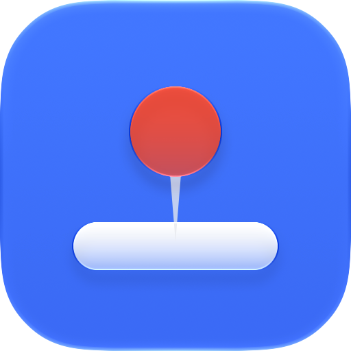

<!doctype html>
<html>
<head>
<meta charset="utf-8">
<title>dockpin media</title>
<!--
  Renders the README/manual illustrations and the demo video, frame by frame.
  Driven by docs/media/capture.mjs; query parameters:
    mode=video|desk|onboarding|edges   lang=en|ko
  In video/desk mode, window.render(t) draws the moment t seconds into the demo.
  The UI drawn here mirrors the real app (Sources/dockpin/MenuView.swift,
  OnboardingView.swift); keep the two in step.
-->
<style>
  :root {
    --font: -apple-system, BlinkMacSystemFont, "SF Pro Text", "Apple SD Gothic Neo", "Helvetica Neue", sans-serif;
    --menu-blue: #2f6fe0;
    --guard: #ff4d4f;
    --open: #2fbf71;
  }
  html, body { margin: 0; background: #0b0f17; }
  #stage {
    position: relative; width: 1600px; height: 900px; overflow: hidden;
    font-family: var(--font); color: #fff;
    background:
      radial-gradient(1100px 620px at 50% 28%, #2b3654 0%, #151b2b 58%, #0b0f17 100%);
  }
  .abs { position: absolute; }

  /* Displays */
  .bezel { position: absolute; background: #0d0e12; border-radius: 16px;
    box-shadow: 0 34px 70px rgba(0,0,0,.5), inset 0 0 0 1px #2b2e36; }
  .screen { position: absolute; overflow: hidden; border-radius: 4px;
    background:
      radial-gradient(70% 90% at 15% 0%, rgba(150,190,255,.85), transparent 60%),
      radial-gradient(60% 80% at 95% 100%, rgba(255,150,190,.75), transparent 60%),
      linear-gradient(135deg, #4a6cf0, #8a63e8 55%, #c76fd8); }
  .screen.alt { background:
      radial-gradient(70% 90% at 85% 0%, rgba(120,220,255,.8), transparent 60%),
      radial-gradient(60% 80% at 0% 100%, rgba(255,190,120,.7), transparent 60%),
      linear-gradient(160deg, #2f7fd8, #5a6ff0 50%, #8f6fe0); }
  .stand-neck { position: absolute; background: linear-gradient(90deg,#a9adb6,#d9dce2 50%,#a2a6af); }
  .stand-foot { position: absolute; background: linear-gradient(#d6d9df,#9fa3ab); border-radius: 6px 6px 10px 10px; }
  .laptop-base { position: absolute; background: linear-gradient(#d9dce2,#9a9ea7); border-radius: 0 0 16px 16px; }
  .laptop-base::after { content:""; position:absolute; left:42%; width:16%; top:0; height:30%; background:#8d9199; border-radius:0 0 8px 8px; }

  .menubar { position: absolute; left: 0; right: 0; top: 0; display: flex; align-items: center;
    background: rgba(255,255,255,.28); backdrop-filter: blur(12px);
    color: #111; font-weight: 600; white-space: nowrap; }
  .menubar .left { display:flex; gap: 1.1em; padding-left: .9em; align-items:center; }
  .menubar .right { margin-left: auto; display:flex; gap: .95em; padding-right: .8em; align-items:center; font-weight: 500; }
  .menubar svg { display:block; }
  .pin-item { position: relative; display:flex; align-items:center; justify-content:center; border-radius: 5px; padding: 1px 4px; }
  .pin-item.active { background: rgba(0,0,0,.18); }

  .win { position:absolute; background: rgba(246,247,250,.96); border-radius: 9px;
    box-shadow: 0 10px 30px rgba(0,0,0,.25); overflow:hidden; }
  .win .bar { height: 14%; min-height: 12px; background: #e9ebef; display:flex; align-items:center; gap: 5px; padding-left: 8px; }
  .win .bar i { width: 7px; height: 7px; border-radius: 50%; display:block; }
  .win .line { height: 6px; background:#d9dde5; border-radius:3px; margin: 9px 10px 0; }

  .dock { position:absolute; display:flex; align-items:center;
    background: rgba(255,255,255,.34); backdrop-filter: blur(14px);
    border: 1px solid rgba(255,255,255,.45); box-shadow: 0 6px 20px rgba(0,0,0,.18); }
  .dock b { display:block; border-radius: 22%; box-shadow: inset 0 -2px 0 rgba(0,0,0,.12); }

  .glow { position:absolute; left:0; right:0; bottom:0; pointer-events:none;
    background: linear-gradient(to top, #ff3b3d, rgba(255,59,61,.55) 30%, transparent);
    box-shadow: inset 0 -4px 0 #ff3b3d; }

  /* Cursor */
  #cursor { position:absolute; width: 26px; height: 26px; margin: -2px 0 0 -4px; filter: drop-shadow(0 1px 1.5px rgba(0,0,0,.45)); z-index: 30; }

  /* Menu, like the real MenuBarExtra menu */
  .menu { position:absolute; z-index: 20; width: 318px; padding: 5px;
    background: rgba(242,243,246,.86); backdrop-filter: blur(24px) saturate(1.6);
    border-radius: 11px; border: .5px solid rgba(0,0,0,.18);
    box-shadow: 0 18px 50px rgba(0,0,0,.35), 0 0 0 .5px rgba(255,255,255,.4) inset;
    color:#1d1d1f; font-size: 15px; }
  .menu .row { position:relative; height: 26px; display:flex; align-items:center; padding: 0 10px 0 26px; border-radius: 6px; white-space:nowrap; }
  .menu .row .check { position:absolute; left: 8px; font-size: 13px; font-weight: 700; }
  .menu .row .key { margin-left:auto; color:#6e6e73; }
  .menu .row.header { color:#8a8a8e; font-size: 12.5px; font-weight: 600; height: 22px; }
  .menu .row.hover { background: var(--menu-blue); color:#fff; }
  .menu .row.hover .key { color: rgba(255,255,255,.8); }
  .menu .sep { height: 1px; background: rgba(0,0,0,.11); margin: 5px 10px; }

  /* Overlays */
  #caption { position:absolute; left: 0; right: 0; bottom: 46px; text-align:center; z-index: 40; }
  #caption .chip { display:inline-block; font-size: 22px; font-weight: 700; letter-spacing: .02em;
    padding: 6px 16px; border-radius: 999px; background: rgba(255,255,255,.14); border: 1px solid rgba(255,255,255,.22); }
  #caption .chip.off { background: rgba(255,77,79,.22); border-color: rgba(255,77,79,.5); }
  #caption .chip.on { background: rgba(47,191,113,.22); border-color: rgba(47,191,113,.55); }
  #caption .text { margin-top: 14px; font-size: 34px; font-weight: 600; text-shadow: 0 2px 12px rgba(0,0,0,.5); }
  #keycap { position:absolute; z-index: 41; left: 50%; top: 640px; transform: translateX(-50%);
    display:flex; gap: 10px; align-items:center; padding: 12px 22px; border-radius: 14px;
    background: linear-gradient(#fafafa,#dcdde1); color:#222; font-size: 30px; font-weight: 600;
    box-shadow: 0 6px 0 #a9abb2, 0 14px 28px rgba(0,0,0,.4); }
  #keycap small { font-size: 18px; color:#555; font-weight: 500; }
  #fade { position:absolute; inset:0; background:#0b0f17; z-index: 60; pointer-events:none; }
  #endcard { position:absolute; inset:0; z-index: 70; display:flex; flex-direction:column; align-items:center; justify-content:center;
    background: radial-gradient(900px 520px at 50% 40%, #2b3654, #0b0f17 75%); text-align:center; }
  #endcard img { width: 200px; height: 200px; }
  #endcard h1 { margin: 6px 0 0; font-size: 76px; letter-spacing: -.02em; }
  #endcard p { margin: 8px 0 0; font-size: 30px; color: #c9d3ea; }
  #endcard code { display:inline-block; margin-top: 34px; font: 500 25px ui-monospace, "SF Mono", Menlo, monospace;
    padding: 12px 22px; border-radius: 12px; background: rgba(255,255,255,.08); border: 1px solid rgba(255,255,255,.16); color:#fff; }
  #endcard .url { margin-top: 18px; font-size: 22px; color:#8fa0c4; }

  /* Onboarding window */
  .window { position:absolute; width: 488px; border-radius: 14px; overflow:hidden; color:#1d1d1f;
    background: #ececee; box-shadow: 0 30px 80px rgba(0,0,0,.45), 0 0 0 .5px rgba(0,0,0,.3); }
  .window .titlebar { height: 34px; display:flex; align-items:center; justify-content:center; position:relative; font-size: 14px; font-weight: 600; color:#4a4a4f; }
  .window .lights { position:absolute; left: 14px; top: 11px; display:flex; gap: 8px; }
  .window .lights i { width: 12px; height: 12px; border-radius: 50%; display:block; }
  .window .body { padding: 24px; font-size: 14.5px; line-height: 1.42; }
  .window .head { display:flex; gap: 12px; align-items:center; }
  .window .head img { width: 56px; height: 56px; }
  .window h2 { margin:0; font-size: 21px; }
  .window .sub { color:#6e6e73; }
  .window .status { display:flex; align-items:center; margin-top: 16px; gap: 8px; color:#6e6e73; }
  .btn { margin-left:auto; padding: 4px 13px; border-radius: 7px; font-size: 14px; font-weight: 500; }
  .btn.primary { background: linear-gradient(#3d8bff,#1f6ff2); color:#fff; box-shadow: 0 .5px 1.5px rgba(0,0,0,.3); }
  .window .foot { margin-top: 16px; font-size: 12px; color:#6e6e73; }

  /* Arrangement diagram */
  .arr { position:absolute; border-radius: 6px; border: 2px solid rgba(255,255,255,.55);
    background: linear-gradient(160deg, #3f6fe0, #6d5fe0); box-shadow: 0 16px 40px rgba(0,0,0,.35); }
  .arr .name { position:absolute; left: 0; right: 0; top: 40%; text-align:center; font-size: 22px; font-weight: 600; }
  .arr .res { display:block; font-size: 15px; font-weight: 500; opacity: .75; margin-top: 4px; }
  .band { position:absolute; z-index: 5; }
  .band.guard { background: repeating-linear-gradient(135deg, var(--guard) 0 10px, #ff8a8b 10px 20px); }
  .band.open { background: var(--open); }
  .label { position:absolute; z-index: 6; font-size: 19px; font-weight: 600; padding: 6px 12px; border-radius: 8px; white-space: nowrap; }
  .label.guard { background: rgba(255,77,79,.9); }
  .label.open { background: rgba(47,191,113,.92); }
  .label.pin { background: rgba(255,255,255,.92); color:#1d1d1f; }
  .diagram-title { position:absolute; left: 0; right: 0; top: 34px; text-align:center; font-size: 34px; font-weight: 700; }
</style>
</head>
<body>
<div id="stage"></div>
<script>
const Q = new URLSearchParams(location.search);
const LANG = Q.get('lang') === 'ko' ? 'ko' : 'en';
const MODE = Q.get('mode') || 'video';
const stage = document.getElementById('stage');

const TEXT = {
  en: {
    A: ['Without dockpin', 'Touch the bottom of another display, and the Dock jumps there.'],
    B: ['With dockpin', 'The other displays’ edges stop calling the Dock.'],
    C: ['Pick a display', 'Choose it in the menu, and the Dock moves there right away.'],
    D: ['Hold ⌥', 'When you do want to move it, the Dock moves the usual way.'],
    tagline: 'Keep the Dock on one display.',
    meta: 'Free and open source · macOS 13 or later',
    option: 'option',
    edgesTitle: 'Which edges dockpin guards',
    pinned: 'Pinned: the Dock stays here',
    guarded: 'Guarded edge',
    open: 'Open: leads to the display below',
  },
  ko: {
    A: ['dockpin 없이', '다른 화면 아래쪽에 커서가 닿으면 Dock이 그쪽으로 넘어갑니다.'],
    B: ['dockpin과 함께', '다른 화면의 가장자리는 더 이상 Dock을 부르지 않습니다.'],
    C: ['화면 고르기', '메뉴에서 화면을 고르면 Dock이 바로 그 화면으로 옮겨갑니다.'],
    D: ['⌥ 누른 채로', '일부러 옮기고 싶을 때는 평소처럼 옮겨갑니다.'],
    tagline: 'Dock을 한 화면에 고정하세요.',
    meta: '무료 오픈소스 · macOS 13 이상',
    option: 'option',
    edgesTitle: 'dockpin이 막는 가장자리',
    pinned: '고정 화면: Dock이 여기 머뭅니다',
    guarded: '막힌 가장자리',
    open: '열린 구간: 아래 화면으로 이어짐',
  },
}[LANG];

const el = (tag, cls, parent, style) => {
  const e = document.createElement(tag);
  if (cls) e.className = cls;
  if (style) Object.assign(e.style, style);
  (parent || stage).appendChild(e);
  return e;
};
const px = v => v + 'px';
const clamp01 = v => Math.max(0, Math.min(1, v));
const ease = v => { v = clamp01(v); return v < .5 ? 2 * v * v : 1 - Math.pow(-2 * v + 2, 2) / 2; };
const span = (t, a, b) => clamp01((t - a) / (b - a));
/** Piecewise path through [time, x, y] keys, eased between keys. */
function path(t, keys) {
  if (t <= keys[0][0]) return { x: keys[0][1], y: keys[0][2] };
  for (let i = 1; i < keys.length; i++) {
    const [t1, x1, y1] = keys[i], [t0, x0, y0] = keys[i - 1];
    if (t <= t1) { const p = ease((t - t0) / (t1 - t0)); return { x: x0 + (x1 - x0) * p, y: y0 + (y1 - y0) * p }; }
  }
  const k = keys[keys.length - 1]; return { x: k[1], y: k[2] };
}

const PIN_SVG = (size, slash) => `
<svg width="${size}" height="${size}" viewBox="0 0 20 20">
  <circle cx="10" cy="6.3" r="4.6" fill="#1d1d1f"/>
  <path d="M8.6 10.2 L10 18.6 L11.4 10.2 Z" fill="#1d1d1f"/>
  ${slash ? '<path d="M3 2.5 L17 17.5" stroke="#1d1d1f" stroke-width="1.8" stroke-linecap="round"/>' : ''}
</svg>`;
const CURSOR_SVG = `
<svg viewBox="0 0 26 26" width="26" height="26">
  <path d="M5 2 L5 21 L9.6 16.8 L12.6 23.6 L15.6 22.3 L12.7 15.6 L19 15.6 Z" fill="#000" stroke="#fff" stroke-width="1.6" stroke-linejoin="round"/>
</svg>`;
const DOCK_COLORS = ['#3b82f6', '#22c55e', '#f59e0b', '#ef4444', '#a855f7', '#06b6d4', '#f97316', '#64748b'];

// ---------------------------------------------------------------- desk scene

const SCREENS = {
  ext: { x: 140, y: 92, w: 820, h: 462, name: 'External 4K Display', res: '3840×2160', alt: false },
  mac: { x: 1030, y: 300, w: 440, h: 286, name: 'Built-in Retina Display', res: '3024×1964', alt: true },
};

function buildDesk() {
  const { ext, mac } = SCREENS;
  // External monitor: bezel + stand
  el('div', 'stand-neck', null, { left: px(ext.x + ext.w / 2 - 34), top: px(ext.y + ext.h + 14), width: '68px', height: '120px' });
  el('div', 'stand-foot', null, { left: px(ext.x + ext.w / 2 - 150), top: px(ext.y + ext.h + 128), width: '300px', height: '18px' });
  el('div', 'bezel', null, { left: px(ext.x - 14), top: px(ext.y - 14), width: px(ext.w + 28), height: px(ext.h + 28) });
  // MacBook: lid bezel + base
  el('div', 'bezel', null, { left: px(mac.x - 12), top: px(mac.y - 12), width: px(mac.w + 24), height: px(mac.h + 22), borderRadius: '14px 14px 4px 4px' });
  el('div', 'laptop-base', null, { left: px(mac.x - 52), top: px(mac.y + mac.h + 10), width: px(mac.w + 104), height: '16px' });

  for (const [key, s] of Object.entries(SCREENS)) {
    s.el = el('div', 'screen' + (s.alt ? ' alt' : ''), null, { left: px(s.x), top: px(s.y), width: px(s.w), height: px(s.h) });
    // a couple of windows
    const wins = key === 'ext'
      ? [[.07, .14, .44, .55], [.47, .24, .43, .5]]
      : [[.1, .16, .62, .56]];
    for (const [l, t, w, h] of wins) {
      const win = el('div', 'win', s.el, { left: px(s.w * l), top: px(s.h * t), width: px(s.w * w), height: px(s.h * h) });
      const bar = el('div', 'bar', win);
      for (const c of ['#ff5f57', '#febc2e', '#28c840']) el('i', null, bar, { background: c });
      for (let i = 0; i < 4; i++) el('div', 'line', win, { width: (70 - i * 12) + '%' });
    }
    // menu bar
    const mbh = Math.max(16, s.h * .042);
    const mb = el('div', 'menubar', s.el, { height: px(mbh), fontSize: px(mbh * .62) });
    const left = el('div', 'left', mb); left.innerHTML = '<span>Finder</span><span style="font-weight:500">File</span><span style="font-weight:500">Edit</span><span style="font-weight:500">View</span>';
    const right = el('div', 'right', mb);
    s.pin = el('span', 'pin-item', right);
    s.pinSize = Math.round(mbh * 1.05);
    el('span', null, right).textContent = 'Tue 9:41';
    // dock
    const icon = s.w * .041, gap = icon * .2, pad = icon * .22;
    s.dockH = icon + pad * 2; s.dockMargin = icon * .2;
    const n = DOCK_COLORS.length, dw = n * icon + (n - 1) * gap + pad * 2;
    s.dock = el('div', 'dock', s.el, { left: px((s.w - dw) / 2), width: px(dw), height: px(s.dockH), bottom: px(s.dockMargin),
      gap: px(gap), padding: px(pad), boxSizing: 'border-box', borderRadius: px(icon * .42) });
    for (const c of DOCK_COLORS) el('b', null, s.dock, { width: px(icon), height: px(icon), background: c });
    s.glow = el('div', 'glow', s.el, { height: '34px', opacity: 0 });
  }

  // menu under the pin of the external display
  const menu = el('div', 'menu');
  const rows = [
    ['row', 'Pin the Dock', true],
    ['sep'],
    ['row header', 'Keep the Dock on'],
    ['row', `${SCREENS.ext.name} (${SCREENS.ext.res})`, 'ext'],
    ['row', `${SCREENS.mac.name} (${SCREENS.mac.res})`, 'mac'],
    ['row', 'If It’s Unplugged', false, '›'],
    ['sep'],
    ['row', 'Hold ⌥ to Let It Move', true],
    ['row', 'Open at Login', true],
    ['sep'],
    ['row', 'About dockpin'],
    ['row', 'Quit dockpin', false, '⌘Q'],
  ];
  const menuRows = {};
  for (const [cls, label, check, key] of rows) {
    if (cls === 'sep') { el('div', 'sep', menu); continue; }
    const r = el('div', cls, menu);
    const c = el('span', 'check', r);
    if (check === true) c.textContent = '✓';
    if (check === 'ext' || check === 'mac') menuRows[check] = { row: r, check: c };
    el('span', null, r).textContent = label;
    if (key) el('span', 'key', r).textContent = key;
  }
  const cursor = el('div', null); cursor.id = 'cursor'; cursor.innerHTML = CURSOR_SVG;
  return { menu, menuRows, cursor };
}

function layoutMenu(desk) {
  const s = SCREENS.ext, p = s.pin.getBoundingClientRect(), st = stage.getBoundingClientRect();
  const left = p.left - st.left - 10, top = s.y + Math.max(16, s.h * .042) + 4;
  Object.assign(desk.menu.style, { left: px(left), top: px(top) });
  const pin = { x: p.left - st.left + p.width / 2, y: p.top - st.top + p.height / 2 };
  const row = r => { const b = r.getBoundingClientRect(); return { x: b.left - st.left + 150, y: b.top - st.top + b.height / 2 }; };
  return { pin, macRow: row(desk.menuRows.mac.row) };
}

// The demo, scene by scene. Times in seconds.
const SCENES = [
  { key: 'A', from: 0, to: 5.8, chip: 'off' },
  { key: 'B', from: 5.8, to: 10.6, chip: 'on' },
  { key: 'C', from: 10.6, to: 15.4, chip: 'on' },
  { key: 'D', from: 15.4, to: 20.2, chip: 'on' },
];
const DURATION = 23.6;

function stateAt(t, P) {
  const { ext, mac } = SCREENS;
  const extBottom = { x: ext.x + ext.w * .42, y: ext.y + ext.h - 2 };
  const macBottom = { x: mac.x + mac.w * .5, y: mac.y + mac.h - 2 };
  const s = { pinOn: true, pinned: 'ext', dock: { ext: 0, mac: 1 }, cursor: null, hidden: false,
    menu: false, hover: false, glow: 0, option: 0, fade: 0, end: 0, scene: null };
  const scene = SCENES.find(sc => t >= sc.from && t < sc.to);
  s.scene = scene;
  const fadeIO = (a, b) => Math.max(1 - span(t, a, a + .35), span(t, b - .45, b));
  const bob = (a, b) => (t > a && t < b) ? -Math.abs(Math.sin((t - a) * 14)) * 4 : 0;
  // Move the Dock from one screen to the other between a and b.
  const moveDock = (from, to, a, b) => {
    const mid = (a + b) / 2;
    s.dock[from] = ease(span(t, a, mid));
    s.dock[to] = 1 - ease(span(t, mid, b));
  };

  if (!scene) {
    s.end = ease(span(t, 20.2, 20.75));
    s.fade = 0;
    s.cursor = { x: -100, y: -100 };
    return s;
  }
  const T0 = scene.from;
  if (scene.key === 'A') {
    s.pinOn = false;
    s.fade = Math.max(1 - span(t, 0, .4), span(t, 5.35, 5.8));
    const c = path(t, [[.3, 640, 300], [1.7, macBottom.x, macBottom.y - 40], [2.15, macBottom.x, macBottom.y]]);
    c.y += bob(2.15, 3.0);
    s.cursor = c;
    moveDock('ext', 'mac', 2.75, 3.55);
  } else if (scene.key === 'B') {
    s.fade = fadeIO(T0, scene.to);
    const c = path(t, [[T0 + .3, 640, 300], [T0 + 1.6, macBottom.x, macBottom.y - 40], [T0 + 2.0, macBottom.x, macBottom.y]]);
    c.y += bob(T0 + 2.0, T0 + 3.6);
    s.cursor = c;
    if (t > T0 + 2.0 && t < T0 + 3.9) s.glow = .55 + .45 * Math.abs(Math.sin((t - T0 - 2.0) * 5));
    s.glow *= 1 - span(t, T0 + 3.6, T0 + 3.9);
  } else if (scene.key === 'C') {
    s.fade = fadeIO(T0, scene.to);
    const click = T0 + 1.3, pick = T0 + 2.8;
    s.menu = t >= click && t < pick;
    s.hover = t >= T0 + 2.05 && t < pick;
    const c = path(t, [[T0 + .3, 640, 330], [T0 + 1.2, P.pin.x - 2, P.pin.y + 2], [click + .25, P.pin.x - 2, P.pin.y + 2], [T0 + 2.0, P.macRow.x, P.macRow.y]]);
    s.cursor = c;
    s.hidden = t >= pick && t < pick + .75;
    if (t >= pick) s.pinned = 'mac';
    moveDock('ext', 'mac', pick + .05, pick + .7);
  } else if (scene.key === 'D') {
    s.pinned = 'mac';
    s.dock = { ext: 1, mac: 0 };
    s.fade = fadeIO(T0, scene.to);
    s.option = ease(span(t, T0 + .9, T0 + 1.2)) * (1 - ease(span(t, T0 + 3.9, T0 + 4.2)));
    const c = path(t, [[T0 + .3, 900, 300], [T0 + 1.5, extBottom.x, extBottom.y - 40], [T0 + 1.85, extBottom.x, extBottom.y]]);
    c.y += bob(T0 + 1.85, T0 + 2.7);
    s.cursor = c;
    moveDock('mac', 'ext', T0 + 2.35, T0 + 3.1);
  }
  return s;
}

function buildOverlays() {
  const caption = el('div'); caption.id = 'caption';
  const chip = el('span', 'chip', caption);
  const text = el('div', 'text', caption);
  const key = el('div'); key.id = 'keycap'; key.innerHTML = `⌥ <small>${TEXT.option}</small>`;
  const fade = el('div'); fade.id = 'fade';
  const end = el('div'); end.id = 'endcard';
  end.innerHTML = `
    <h1>dockpin</h1><p>${TEXT.tagline}</p>
    <code>brew install --cask esteban-eg-kim/tap/dockpin</code>
    <div class="url">github.com/esteban-eg-kim/dockpin · ${TEXT.meta}</div>`;
  return { caption, chip, text, key, fade, end };
}

function draw(s, desk, ov, withCaption) {
  for (const [k, sc] of Object.entries(SCREENS)) {
    sc.dock.style.transform = `translateY(${s.dock[k] * (sc.dockH + sc.dockMargin + 6)}px)`;
    sc.pin.innerHTML = s.pinOn ? PIN_SVG(sc.pinSize, false) : '';
    sc.pin.style.display = s.pinOn ? 'flex' : 'none';
    sc.pin.classList.toggle('active', k === 'ext' && s.menu);
    sc.glow.style.opacity = k === 'mac' ? s.glow : 0;
  }
  desk.menu.style.display = s.menu ? 'block' : 'none';
  desk.menuRows.mac.row.classList.toggle('hover', s.hover);
  desk.menuRows.ext.check.textContent = s.pinned === 'ext' ? '✓' : '';
  desk.menuRows.mac.check.textContent = s.pinned === 'mac' ? '✓' : '';
  desk.cursor.style.display = s.hidden || !s.cursor ? 'none' : 'block';
  if (s.cursor) Object.assign(desk.cursor.style, { left: px(s.cursor.x), top: px(s.cursor.y) });
  if (ov) {
    ov.caption.style.display = withCaption && s.scene ? 'block' : 'none';
    if (s.scene) {
      const [chip, text] = TEXT[s.scene.key];
      ov.chip.textContent = chip; ov.chip.className = 'chip ' + s.scene.chip; ov.text.textContent = text;
    }
    ov.key.style.opacity = s.option; ov.key.style.transform = `translateX(-50%) translateY(${(1 - s.option) * 14}px)`;
    ov.fade.style.opacity = s.fade;
    ov.end.style.opacity = s.end; ov.end.style.display = s.end > 0 ? 'flex' : 'none';
  }
}

// ---------------------------------------------------------------- other modes

function buildOnboarding() {
  stage.style.width = '600px'; stage.style.height = '400px';
  stage.style.background = 'linear-gradient(135deg, #4a6cf0, #8a63e8 55%, #c76fd8)';
  const w = el('div', 'window', null, { left: '56px', top: '40px' });
  w.innerHTML = `
    <div class="titlebar"><div class="lights"><i style="background:#ff5f57"></i><i style="background:#febc2e"></i><i style="background:#28c840"></i></div>Welcome to dockpin</div>
    <div class="body">
      <div class="head"><div><h2>dockpin</h2><div class="sub">Keep the Dock on one display.</div></div></div>
      <p style="margin:16px 0 0">To stop the Dock from following the cursor to other displays, and to move it to the display you pick, dockpin needs to see and move the mouse. Allow it under System Settings › Privacy &amp; Security › Accessibility.</p>
      <div class="status">⌛︎ Waiting for access… <span class="btn primary">Open System Settings</span></div>
      <div class="foot">dockpin lives in the menu bar (${PIN_SVG(12, false).replace(/#1d1d1f/g, '#6e6e73')}). Pick the Dock's display there.</div>
    </div>`;
  w.querySelector('.foot svg').style.cssText = 'display:inline;vertical-align:-1px';
  window.clip = { x: 0, y: 0, width: 600, height: 400 };
}

function buildEdges() {
  // The author's real desk: 4K main, small panel below it, portrait monitor to the right.
  // Quartz points, scaled. Pinned: the portrait monitor.
  const k = .235, ox = 255, oy = 150;
  const D = {
    main: { x: 0, y: 0, w: 3008, h: 1692, name: 'Main 4K', res: '3008×1692 pt' },
    panel: { x: 1317, y: 1692, w: 1024, h: 683, name: 'Panel', res: '1024×683 pt' },
    tall: { x: 3008, y: -322, w: 1440, h: 2560, name: 'Portrait', res: '1440×2560 pt' },
  };
  const r = d => ({ left: ox + d.x * k, top: oy + (d.y + 322) * k, width: d.w * k, height: d.h * k });
  el('div', 'diagram-title').textContent = TEXT.edgesTitle;
  for (const d of Object.values(D)) {
    const b = r(d);
    const a = el('div', 'arr', null, { left: px(b.left), top: px(b.top), width: px(b.width), height: px(b.height), boxSizing: 'border-box' });
    const n = el('div', 'name', a); n.textContent = d.name; el('span', 'res', n).textContent = d.res;
    d.box = b;
  }
  // Dock on the pinned portrait monitor
  const t = D.tall.box, dw = t.width * .62;
  const dock = el('div', 'dock', null, { left: px(t.left + (t.width - dw) / 2), top: px(t.top + t.height - 26), width: px(dw), height: '18px', borderRadius: '6px', zIndex: 4 });
  const h = 9;
  const band = (cls, x, y, w, hh) => el('div', 'band ' + cls, null, { left: px(x), top: px(y), width: px(w), height: px(hh) });
  const m = D.main.box, p = D.panel.box;
  const mainBottom = m.top + m.height - h;
  band('guard', m.left, mainBottom, p.left - m.left, h);
  band('open', p.left, mainBottom, p.width, h);
  band('guard', p.left + p.width, mainBottom, m.left + m.width - (p.left + p.width), h);
  band('guard', p.left, p.top + p.height - h, p.width, h);
  const label = (cls, text, x, y) => { const l = el('div', 'label ' + cls, null, { left: px(x), top: px(y) }); l.textContent = text; return l; };
  const centered = (l, cx) => { l.style.left = px(cx - l.offsetWidth / 2); };
  label('guard', TEXT.guarded, m.left + 24, mainBottom + 26);
  label('guard', TEXT.guarded, p.left + p.width + 24, p.top + p.height - 30);
  centered(label('open', TEXT.open, 0, mainBottom - 52), p.left + p.width / 2);
  centered(label('pin', '📌 ' + TEXT.pinned, 0, t.top + t.height - 84), t.left + t.width / 2);
  window.clip = { x: 0, y: 0, width: 1600, height: 900 };
}

// ---------------------------------------------------------------- boot

window.ready = false;
document.fonts.ready.then(() => {
  if (MODE === 'onboarding') buildOnboarding();
  else if (MODE === 'edges') buildEdges();
  else {
    const desk = buildDesk();
    const ov = buildOverlays();
    const P = layoutMenu(desk);
    window.DURATION = DURATION;
    window.render = t => draw(stateAt(t, P), desk, ov, MODE === 'video');
    // Still of the menu, Dock on the external display, nothing else on top.
    window.renderDesk = () => {
      const s = stateAt(12.5, P);
      s.fade = 0; s.cursor = { x: P.macRow.x, y: P.macRow.y }; s.hover = true;
      draw(s, desk, ov, false);
    };
    window.menuClip = () => {
      const b = desk.menu.getBoundingClientRect(), st = stage.getBoundingClientRect();
      const s = SCREENS.ext;
      return { x: b.left - st.left - 300, y: s.y, width: b.width + 340, height: b.bottom - st.top - s.y + 30 };
    };
    window.render(Number(Q.get('t') || 0));
  }
  const imgs = [...document.images];
  Promise.all(imgs.map(i => i.complete ? 0 : new Promise(r => { i.onload = i.onerror = r; }))).then(() => { window.ready = true; });
});
</script>
</body>
</html>
